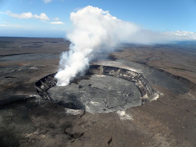
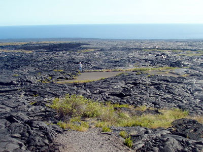
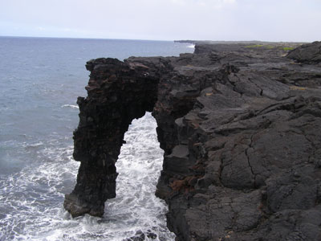
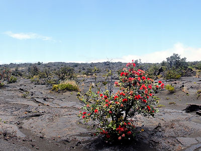
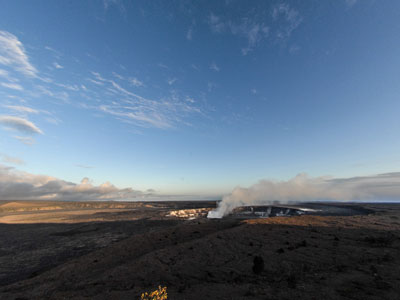
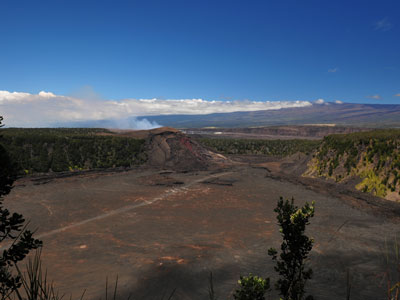
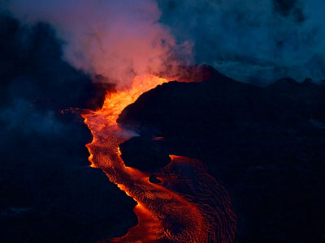
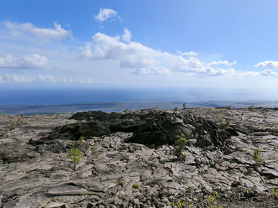
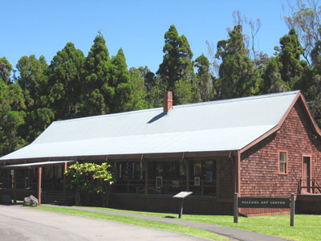
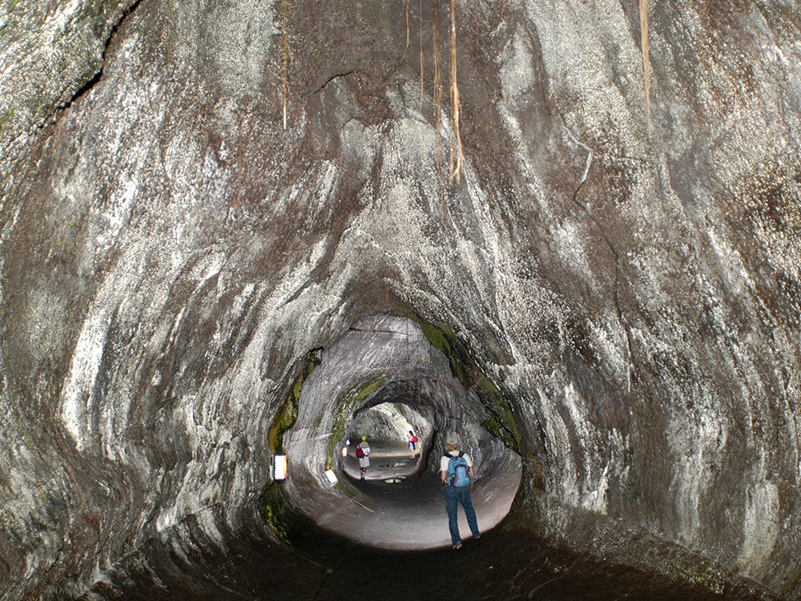

.JPG){kind=link}
Expansive natural area featuring active volcanoes, lava tubes, craters, and diverse native ecosystems shaped by ongoing geological activity.
General Information
Kahuku Unit: Thursday to Sunday, 8am to 4pm; closed Monday to Wednesday
Motorcycle (7-day pass): $25
Individual on foot or bicycle (7-day pass): $15
Annual Tri-Park Pass: $55
How to Get There
From Hilo (30 mi): Take HI-11 W for approximately 45 minutes, following signs for Volcano; the park entrance is on the left just past Volcano Village.
Overview
Hawaiʻi Volcanoes National Park covers more than 323,000 acres on the southeast side of the Big Island of Hawaii and is one of the few places on Earth where visitors can see an active volcano. It protects two of the world's most famous volcanoes: Kīlauea, among the most active on the planet, and Mauna Loa, the world's most massive shield volcano at 13,679 feet. Landscapes range from steaming craters and fresh lava fields to lush rainforest, the barren Kaʻū Desert, and a rugged coastline. The park is both a UNESCO World Heritage Site (1987) and an International Biosphere Reserve (1980).
Native Hawaiians consider Kīlauea's Halemaʻumaʻu crater the sacred home of Pele, goddess of fire and volcanoes. Kīlauea became a tourist attraction in the 1840s, when hotels opened on the crater rim, and the park was established in 1916 as Hawaii National Park, becoming a separate park from Haleakalā National Park in 1961. People come to see steam vents and craters, drive down to the sea on Chain of Craters Road, walk through a lava tube, and, when conditions allow, see the red glow of lava at night. Eruptions in 2018 collapsed the summit and closed parts of the park for months, so check current conditions before you go.
Park Sections
The park's main area is the Kīlauea summit, reached from the entrance off Highway 11 near Volcano Village, where the Kīlauea Visitor Center, Volcano House, and the Kīlauea Caldera are located. From there, Crater Rim Drive circles the caldera, and the 19-mile Chain of Craters Road descends about 3,700 feet to the coast. Mauna Loa Road leads to a trailhead for the Mauna Loa summit. The separate Kahuku Unit, added in 2004, is off Highway 11 near mile marker 70, about an hour southwest. The remote coast, including Halapē, is reached on long backcountry hikes.
Sightseeing and Exploring the Park
Crater Rim Drive passes the steam vents, the Sulphur Banks, and the Kīlauea Overlook, although parts of the road near the summit have been closed since the 2018 collapse. Kīlauea Iki Overlook and Thurston Lava Tube are popular stops. Chain of Craters Road passes the Devastation Trail, Pauahi Crater, the Mauna Ulu eruption area, and the Hōlei Sea Arch, and ends where lava once crossed the road. When Halemaʻumaʻu is active, the glow can be seen at night from viewpoints such as the Uēkahuna overlook. Road and trail closures change often because of volcanic activity and gas, so check the park's website.
Hiking
The park has more than 150 miles of trails. Easy walks include the paved Devastation Trail (about 1 mile), the Thurston Lava Tube, and the Puʻuloa Petroglyph Trail (about 1.4 miles round trip). The Kīlauea Iki Trail, a 4-mile moderate loop, descends through rainforest and crosses the crater floor. The Crater Rim Trail circles the caldera, parts of which are closed. The Hilina Pali and Puna Coast trails lead to the remote coast, and the Mauna Loa Trail, a multi-day climb to the summit, is only for fit, experienced hikers with permits. Bring rain gear, sun protection, and plenty of water.
Other Activities
Besides sightseeing and hiking, the park offers ranger-led walks and talks, stargazing at the summit, cultural demonstrations at the Volcano Art Center Gallery, and backcountry camping. Helicopter tours that fly over the volcanic area depart from Hilo and Kona, though they are outside the park. Nearby, Volcano Village has restaurants, galleries, and a winery, and Lava Tree State Park and the black sand beaches of Punaluʻu are a short drive away. There are no cave tours beyond the self-guided Thurston Lava Tube, and swimming is not permitted at most coastal sites because of dangerous surf and currents.
Flora and Wildlife
The park's plants include native ʻōhiʻa lehua trees, whose red flowers are the first to colonize new lava, hāpuʻu tree ferns, ʻōhelo berry shrubs, and the endemic ʻamaʻu ferns, and there are lush rainforests near the summit and barren desert in the southwest. Wildlife includes the nēnē, Hawaii's state bird and a rare goose that is often seen near the Kīlauea summit and along roads, the Hawaiian hawk (ʻio), the ʻapapane honeycreeper, the Hawaiian hoary bat, and green and hawksbill sea turtles on the coast. Watch for nēnē crossing roads. Viewing is on your own.
Access
The park is on the southeast side of the Big Island, reached by car on Highway 11. From Hilo, the entrance is about 30 miles and 45 minutes away, and from Kailua-Kona it is about 100 miles and 2 to 2.5 hours. Hilo International Airport and Kona International Airport are the two main airports. There is no public bus service to the park, so most visitors rent a car or join a tour from Hilo or Kona. Entrance fees are good for 7 days, and the park is open 24 hours a day.
Seasons
The park is open year-round. At the summit, about 4,000 feet in elevation, it is cool and often foggy or rainy, so bring a jacket and rain gear, while the coast is hot, dry, and sunny. Summer is generally drier, and winter brings more rain and cooler temperatures; there is no real tourist off-season. Volcanic activity matters more than the seasons: eruptions, earthquakes, and volcanic gas (vog) can close roads, trails, or areas, sometimes for months. Night is often the best time to see the glow of an eruption, when one is happening.
Camping and Lodging
The park has two drive-in campgrounds, Nāmakanipaio near the summit, which also has cabins, and Kulanaokuaiki, a small primitive campground along Hilina Pali Road. Backcountry camping requires a permit. Volcano House, the historic hotel on the rim of Kīlauea, has been closed for renovations in recent years, so check its status. Just outside the park, Volcano Village has many bed-and-breakfasts, vacation rentals, and inns such as Kilauea Lodge. Hilo, about 45 minutes away, has the widest range of hotels, such as the Grand Naniloa and Hilo Hawaiian Hotel, and Kona on the west side is about 2 hours away.
Visitor Centers
The Kīlauea Visitor Center, just inside the park entrance, is the main visitor center, with exhibits on the volcanoes, a short film, a bookstore, and rangers who can advise on current conditions, closures, and eruption viewing. The Volcano Art Center Gallery, in the historic 1877 Volcano House building, shows work by local artists. The Kahuku Visitor Contact Station in the Kahuku Unit is open on selected days with information and ranger programs. Hours vary, so check the National Park Service website before you go.
This article uses material from the Wikipedia article "Hawai'i Volcanoes National Park", which is released under the Creative Commons Attribution-Share-Alike License 3.0. Additional information comes from the National Park Service Hawaiʻi Volcanoes National Park website.
Featured Locations and Trails

Hawaii Volcano Observatory, USGS, Public domain, via Wikimedia Commons; Image Size Adjusted

au Loa o Mauna Ulu
Expansive volcanic landscape featuring smooth, rolling lava fields and panoramic views shaped by historic eruptions.

George Mitchell, CC BY 3.0, via Wikimedia Commons; Image Size Adjusted

Chain of Craters Road
Scenic drive descending through volcanic terrain, showcasing craters, lava flows, petroglyphs, and dramatic coastal views.
Hawaii Volcano Observatory, USGS, Public domain, via Wikimedia Commons; Image Size Adjusted
Crater Rim Trail
Scenic hiking trail skirting the summit caldera of an active volcano, offering views of steam vents, rainforest, and volcanic landscapes.
Hawaii Volcano Observatory, USGS, Public domain, via Wikimedia Commons; Image Size Adjusted
Halapē
Secluded coastal campsite with sandy beaches and coconut palms, accessible only by a strenuous multi-mile backcountry hike.
Hawaii Volcano Observatory, USGS, Public domain, via Wikimedia Commons; Image Size Adjusted
Halema'uma'u
Moderately challenging hiking trail descending through lush rainforest into a volcanic caldera with panoramic views of hardened lava and steam vents.
Hawaii Volcano Observatory, USGS, Public domain, via Wikimedia Commons; Image Size Adjusted
Hilina Pali Overlook
Clifftop viewpoint offering panoramic vistas of the Kaʻū Desert, coastal plains, and Pacific Ocean, reached via a narrow scenic drive through native forest.
Hawaii Volcano Observatory, USGS, Public domain, via Wikimedia Commons; Image Size Adjusted
Hilina Pali Trail
Challenging backcountry trail descending steeply from a cliffside overlook through lava fields to the remote coastal plains below.

Derek Wolfgram from San Jose, CA, CC BY 2.0, via Wikimedia Commons; Image Size Adjusted

Hōlei Sea Arch
Natural basalt arch formed by centuries of ocean erosion, extending from rugged lava cliffs into the Pacific Ocean.

Ivtorov, CC BY-SA 4.0, via Wikimedia Commons; Image Size Adjusted

Ka'ū Desert
Volcanic terrain of hardened lava and ash featuring preserved human footprints and sparse vegetation shaped by acidic rainfall and porous rock.
Hawaii Volcano Observatory, USGS, Public domain, via Wikimedia Commons; Image Size Adjusted
Kaʻaha
Remote coastal shelter reached by a rugged trail descending through windswept grasslands to a rocky cove with snorkeling and turtle sightings.

National Park Service/Ed Shiinoki, Public domain, via Wikimedia Commons; Image Size Adjusted

Kīlauea Caldera
Massive volcanic depression formed by repeated eruptions and collapses, featuring a vast crater floor, steaming vents, and views of the Halemaʻumaʻu Crater.

sota, CC BY-SA 2.0, via Wikimedia Commons; Image Size Adjusted
.jpg){kind=link}
Kīlauea Iki
Crater trail descending through rainforest into a solidified lava lake formed by a dramatic 1959 eruption with visible vents and cinder cones.

United States Geological Survey, Public domain, via Wikimedia Commons; Image Size Adjusted

Kīlauea
Continuously active shield volcano with a summit caldera and frequent eruptions that shape the surrounding landscape and cultural heritage.
Hawaii Volcano Observatory, USGS, Public domain, via Wikimedia Commons; Image Size Adjusted
Mauna Loa Cabin
High-altitude wilderness shelter perched near the summit of a massive shield volcano, accessible only by strenuous multi-day hike through alpine lava fields.
Hawaii Volcano Observatory, USGS, Public domain, via Wikimedia Commons; Image Size Adjusted
Mauna Loa Trail
Strenuous high-altitude trail ascending through lava fields and alpine terrain to the summit of one of the world’s largest volcanoes.

Bob Linsdell, CC BY 3.0, via Wikimedia Commons; Image Size Adjusted

Mauna Ulu
Lava-scarred trail across a surreal volcanic landscape shaped by the 1969–1974 eruption, featuring fissures, lava tree molds, and a cinder cone climb.
Hawaii Volcano Observatory, USGS, Public domain, via Wikimedia Commons; Image Size Adjusted
Mauna Ulu Eruption Area
Lava-sculpted terrain shaped by a five-year eruption, featuring fissures, lava trees, and panoramic views of volcanic transformation.
Hawaii Volcano Observatory, USGS, Public domain, via Wikimedia Commons; Image Size Adjusted
Mokuʻāweoweo Caldera
Remote summit caldera of a massive shield volcano, surrounded by barren lava fields and accessible only by strenuous high-altitude hiking.
Hawaii Volcano Observatory, USGS, Public domain, via Wikimedia Commons; Image Size Adjusted
Nāpau Trail
Backcountry trail traversing lava flows, craters, and rainforest to a remote overlook near a former eruption site.

English: NPS Photo, Public domain, via Wikimedia Commons; Image Size Adjusted
Pu'u 'Ō'ō
Volcanic cone formed by a 35-year eruption that dramatically reshaped the landscape with extensive lava flows and geological formations.
Hawaii Volcano Observatory, USGS, Public domain, via Wikimedia Commons; Image Size Adjusted
Puna Coast Trail
Remote coastal trail traversing rugged lava fields and sea cliffs to secluded beaches and ancient Hawaiian sites.
Hawaii Volcano Observatory, USGS, Public domain, via Wikimedia Commons; Image Size Adjusted
Puʻu Loa
Volcanic pressure dome and sacred cultural site featuring the largest concentration of ancient Hawaiian petroglyphs in the islands.
Hawaii Volcano Observatory, USGS, Public domain, via Wikimedia Commons; Image Size Adjusted
Puʻu Loa Petroglyph Trail
Short lava field trail leading to a sacred site with thousands of ancient Hawaiian petroglyphs etched into the rock.
Hawaii Volcano Observatory, USGS, Public domain, via Wikimedia Commons; Image Size Adjusted
Red Hill Cabin
High-elevation backcountry cabin offering shelter and panoramic views along the Mauna Loa Trail.
Hawaii Volcano Observatory, USGS, Public domain, via Wikimedia Commons; Image Size Adjusted
Thurston Lava Tube
Lush rainforest trail leading to a 500-year-old lava cave formed by ancient volcanic flows and illuminated for safe exploration.

W Nowicki, CC BY 3.0, via Wikimedia Commons; Image Size Adjusted

Volcano House
Historic lodge perched on the rim of a volcanic crater offering panoramic views, rustic accommodations, and access to hiking and cultural experiences.
Hawaii Volcano Observatory, USGS, Public domain, via Wikimedia Commons; Image Size Adjusted
ʻĀpua Point
Remote coastal campsite surrounded by black lava fields, palm trees, and rugged ocean views, accessible only by a strenuous backcountry hike.


